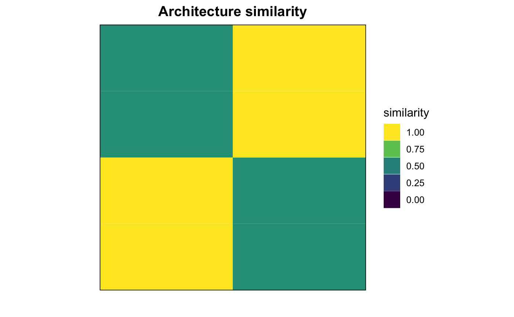

Introduction to motiftools
Diego Diez
31 October 2016
Abstract
Introduction to the motiftools package.
Introduction
motiftools is a package for the analysis and interpretation of sequence motifs. Its initial implementation is focused on protein motif analysis obtained from the MEME suite, but its functionality may extend to other applications and tools, including analysis of nucleotide sequences and motif analysis tools found in Bioconductor or CRAN.
Motif ranges are stored as RangedData objects (IRanges) package). This allows to include metadata, like p-value, score and other output from the search process.
library(motiftools)
library(motifStack)Plotting functions
Alignments
You can align any two sequences of letters. If the argument score.matrix is missing then a empirical scoring matrix will be generated from the sequences themeselves.
align("FOO", "GOO", type = "global")## $alignment
## 1 2 3
## s1 F O O
## s2 G O O
##
## $score
## [1] 0align("AHSSFOO", "GOODFDKD", type = "global")$alignment## 1 2 3 4 5 6 7 8
## s1 A H S S F - O O
## s2 G O O D F D K DFor protein sequences you can specify a particular substitution matrix, like for example BLOSUM62.
data("BLOSUM62", package = "Biostrings")
align("EGGALAPA", "DGGIVLPSAV", score.matrix = BLOSUM62, type = "global")$alignment## 1 2 3 4 5 6 7 8 9 10 11
## s1 E G G - A L A P - A -
## s2 D G G I V L - P S A Valign("EGGALAPA", "DGGIVFFRF", score.matrix = BLOSUM62, type = "local")$alignment## 1 2 3 4 5 6
## x E G G A L A
## y D G G - I VMotifs
# load MEME results.
f <- system.file("files/meme_ras/meme.xml", package = "motiftools")
x_meme <- readMEME(f)
m_meme <- getMotifMatrix(x_meme)
plotMatrix(m_meme, fill = c("white", "grey"))
# load FIMO results.
f <- system.file("files/fimo_ras/fimo.xml", package = "motiftools")
x_fimo <- readFIMO(f)
m_fimo <- getMotifMatrix(x_fimo)
plotMatrix(list(m_meme, m_fimo), fill = c("white", "grey"))# load MAST results.
f <- system.file("files/mast_ras/mast.xml", package = "motiftools")
x_mast <- readMAST(f)
m_mast <- getMotifMatrix(x_mast)
plotMatrix(list(m_meme, m_fimo, m_mast), fill = c("white", "grey"))
# highlight some sequences.
h <- grepl("RASH|RASK", sequenceNames(x_meme))
names(h) <- sequenceNames(x_meme)
plotMatrix(list(m_meme, m_fimo, m_mast), fill = c("white", "grey"), high = h, high.col = c("black", "orange"))
# plot a motif model logo (from MEME output).
p <- pwm(x_meme)[["motif_4"]]
plotMotifLogo(p, col = rainbow(20))## Warning in plotMotifLogo(p, col = rainbow(20)): background length is
## shorter than number of rows. Will use default background
Sequences
m <- matrix(sample(1:5, 100*10, replace = TRUE), ncol = 100, nrow = 10, dimnames = list(letters[1:10], 1:100))
h <- hclust(dist(m))
plotConservationMatrix(m, h)